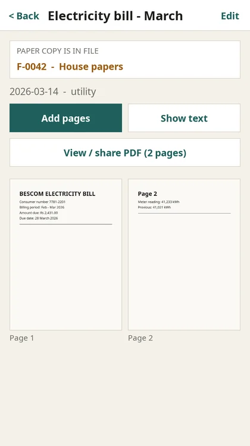
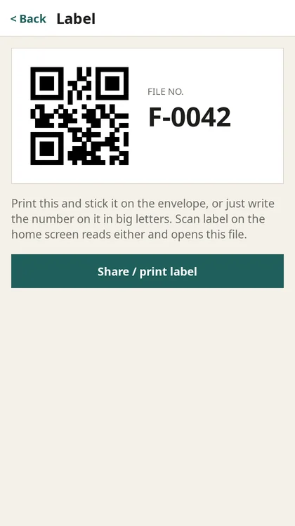
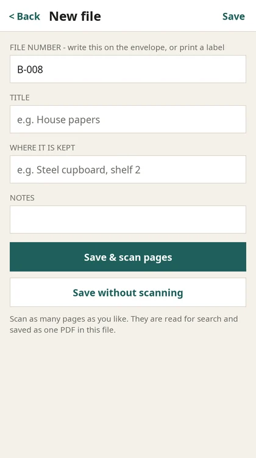
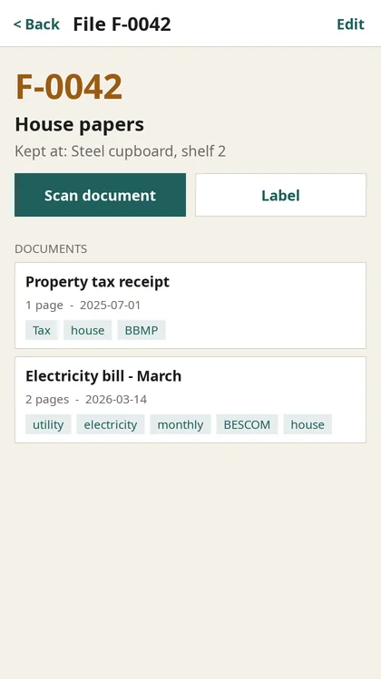

Your paper documents, on your phone
Find any paper in seconds – even offline.
Number your envelopes and box files. Scan what goes inside. MyFiles reads every page on your phone, so you can search for a word and see straight away which envelope holds the original.
- Works offline
- Text read on your phone
- QR or handwritten labels
- PDF of every document
- Your own server, optional
Why MyFiles
The paper stays in the envelope. The answer's in your pocket.
Bills, deeds, certificates, warranties, medical reports. You keep the originals, and MyFiles remembers where each one is.
Numbered files
Give each envelope a number like F-0042. Write it on the envelope or print a QR label. "f 42" and "F-0042" are treated as the same file.
Scan & read
Photograph every page. The text is read on your phone, the title is filled in for you, and all the pages are saved as one PDF.
Search everything
Type a consumer number, a name or a word you remember. Results show the document and the file it's kept in.
Scan a label, open the file
Point the camera at an envelope's QR label or handwritten number, and that file opens with everything inside it.
Tags you can see
Tag documents "tax", "insurance" or "house". Each file shows its tags on the home screen, so you can tell what's inside at a glance.
Private by default
Scans and the search index live on your phone. Nothing leaves it unless you connect your own server.
The app
A quick look


Screenshots use sample data.
How it works
From a pile of paper to an answer in four steps
MyFiles connects each physical envelope to its digital copy through one simple thing: the file number.
Number the envelope
Create a file. The app suggests the next number (F-0042 → F-0043). Print the QR label or write the number by hand.
Scan what goes in
Photograph each page. The phone straightens it, reads the text and saves all the pages as one PDF.
Search any time
Search titles, tags and every word on every page, even in flight mode.
Pull the right envelope
The result tells you the file number. Scan the label to confirm you've got the right one.
What runs where
The details that make it reliable
File numbers that forgive handwriting
Capitals, spaces, punctuation and leading zeros don't matter: F-0042, f 42 and F_042 all mean file F-42. When text is read from a handwritten label, common slips like the letter O for zero are corrected before the app looks for a match.
Sync that survives being offline
Every change is marked on the phone until it's sent. When you're back online, changes go up, then everything changed on other phones comes down. If the same item was edited in two places, the newest edit wins. Deletions sync too.
Two phones, one envelope
A file's ID is its file number. If two phones both create "F-42" while offline, they end up with one file after syncing, not two.
Search that works offline
Titles, tags, every recognised word and the file numbers are indexed on the phone with SQLite FTS5. Results appear as you type, with matching words highlighted.
Install
Get MyFiles on your phone
MyFiles isn't in the App Store or Play Store yet. For now you build it from the source code on GitHub, which takes about 15 minutes the first time.
Install the tools
Xcode from the Mac App Store, then CMake:
brew install cmake
Get the code
git clone https://github.com/rORrEtboLt/MyFiles.git cd MyFiles/mobile
Find your team ID
It's the
OU=value of your Apple Development certificate:security find-certificate -c "Apple Development" -p | openssl x509 -noout -subject
Build for your phone
The first build downloads and compiles SDL3, which takes a few minutes. Replace the bundle ID and team ID with your own.
cmake -S . -B build-iosdev -G Xcode -DCMAKE_SYSTEM_NAME=iOS \ -DCMAKE_OSX_DEPLOYMENT_TARGET=16.0 -DCMAKE_OSX_SYSROOT=iphoneos \ -DCMAKE_OSX_ARCHITECTURES=arm64 \ -DMYFILES_BUNDLE_ID=com.yourname.myfiles -DMYFILES_TEAM_ID=ABCDE12345 xcodebuild -project build-iosdev/MyFiles.xcodeproj -scheme MyFiles \ -configuration Release -allowProvisioningUpdates build
Install on your iPhone
Connect the phone by cable (or the same Wi-Fi) and turn on Developer Mode under Settings → Privacy & Security.
xcrun devicectl list devices xcrun devicectl device install app --device <id> build-iosdev/Release-iphoneos/MyFiles.app
Prefer clicking? Open
build-iosdev/MyFiles.xcodeprojin Xcode, pick your phone and press Run.
Install the tools
Android Studio, then from its SDK Manager: NDK 27 and CMake 3.31.
Get the code
git clone https://github.com/rORrEtboLt/MyFiles.git cd MyFiles/mobile/android ./fetch-sdl-java.sh # SDL's Android Java filesOpen and run
Open the
mobile/androidfolder in Android Studio, connect a phone with USB debugging enabled, and press Run. From a terminal:gradle wrapper && ./gradlew installDebug.
tesseract if it's installed.Install dependencies (macOS)
brew install cmake sdl3 sdl3_ttf sdl3_image brew install tesseract # optional: read text from picked imagesBuild and run
git clone https://github.com/rORrEtboLt/MyFiles.git cd MyFiles/mobile cmake -S . -B build && cmake --build build -j ./build/test_core # run the tests open build/MyFiles.app
Guide
Using MyFiles
One habit to keep: every paper goes into a numbered envelope, and every envelope has a file in the app.
1. Create a file for an envelope
Tap New file. The next number is filled in for you; change it if your envelopes already have numbers. Add a title ("House papers") and where it's kept ("Steel cupboard, shelf 2").
Have the papers in hand? Tap Save & scan pages to go straight to the scanner.

2. Label the envelope
Open the file and tap Label, then Share / print label to print it with AirPrint or save it. Or just write the number on the envelope in big, clear letters. Both work with Scan label.
Labelling lots of envelopes at once? With a server connected, Settings → Print a sheet of numbered labels gives you an A4 sheet of 10.
3. Scan documents into it
Inside a file, tap Scan document and photograph each page. The edges are detected for you. When you tap Save, the text is read, a title is suggested from the first line, and all the pages become one PDF.
Open a document to add more pages, read the recognised text, set the date and tags, or move it to another file by changing its file number.
4. Find anything
Type in the search box on the home screen: a word, a number, a name, a tag or a file number. Each result shows which file holds the paper, with the matching words highlighted.
Search works offline, matches the start of words (typing "elec" finds "electricity"), and only shows results that contain every word you typed.
5. Identify an envelope
Found an envelope and not sure what's in it? Tap Scan label and photograph its QR label or handwritten number, and the matching file opens. If no file matches, MyFiles suggests creating one with that number.

6. Share a PDF
On any document, tap View / share PDF to preview it, print it, save it to Files or send it. It's named after the file and title, e.g. F-0042 Electricity bill.pdf.
7. Turn on backup (optional)
In Settings, enter your server address, email and a password, then tap Create account. From then on the app syncs on its own when you're online. See Your own cloud.
Optional
Run your own cloud
The server backs up your scans and keeps several phones in sync. It's small: Node.js 20+ and PostgreSQL, on a home computer, a Raspberry Pi-class box or a cheap VPS.
Start it
git clone https://github.com/rORrEtboLt/MyFiles.git cd MyFiles/backend npm install createdb myfiles DATABASE_URL=postgres://localhost/myfiles \ JWT_SECRET=$(openssl rand -hex 32) \ npm start # creates the tables, listens on :4000 npm test # optional: integration tests against Postgres
Connect your phone
In the app open Settings, set the server to http://<your computer's IP>:4000 (on a Mac: ipconfig getifaddr en0), then tap Create account. Your phone needs to be on the same Wi-Fi.
JWT_SECRET. The server won't start in production without one.Settings
| Variable | Default | What it does |
|---|---|---|
DATABASE_URL | postgres://localhost:5432/myfiles | PostgreSQL connection |
JWT_SECRET | dev placeholder | Signs sign-in tokens. Required when NODE_ENV=production |
PORT / HOST | 4000 / 0.0.0.0 | Where the API listens |
BLOB_DIR | ./blobs | Where uploaded page images are stored |
MAX_IMAGE_BYTES | 15 MB | Largest page image accepted |
API
| Endpoint | Purpose |
|---|---|
POST /api/auth/register, /api/auth/login | Email + password → sign-in token |
GET /api/sync/pull?cursor=N | Everything changed since N, deletions included, in pages |
POST /api/sync/push | Send local changes (newest edit wins) |
PUT / GET /api/pages/:id/image | Upload or download a page scan |
GET /api/documents/:id/pdf | A document's pages as one PDF |
GET /api/search?q=… | Full-text search on the server |
GET /api/labels/F-0042.svg | One printable label (no sign-in needed; labels contain no private data) |
GET /api/labels/sheet.svg?prefix=F-&from=1&count=10 | An A4 sheet of numbered labels |
Questions
FAQ
Do I need internet or an account?
Where are my scans stored?
Can it read handwriting?
Which languages are recognised?
What happens if I edit the same document on two phones while offline?
What if I sign out?
Is it in the App Store / Play Store?
What is it built with?
Community
MyFiles is young. Ideas, bug reports and help are all welcome, especially with the Android build.